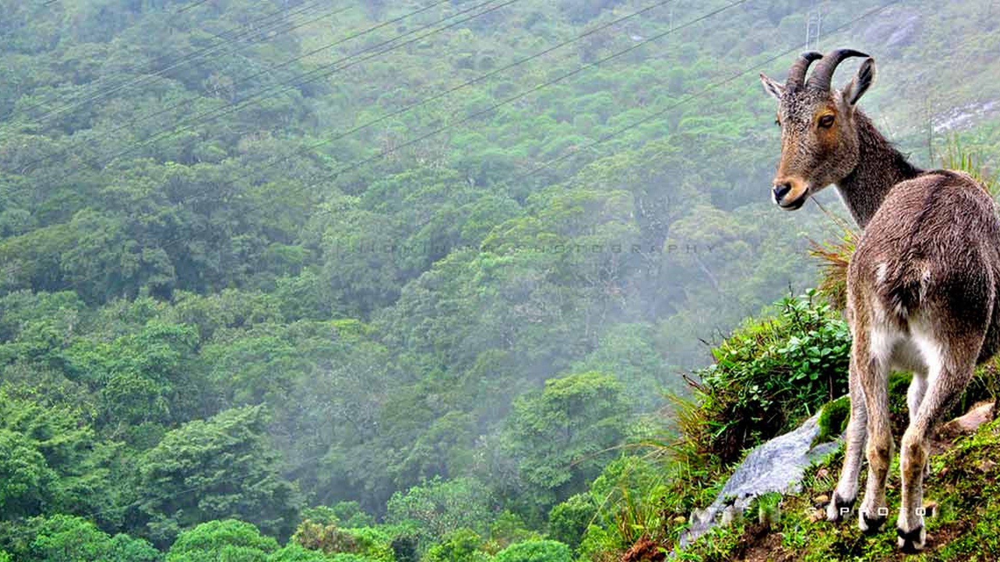
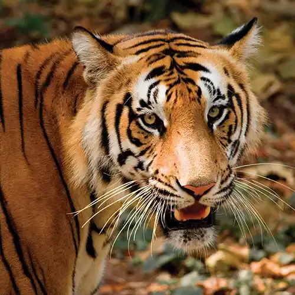
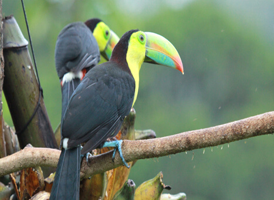

Kerala boasts extraordinary biodiversity, hosting majestic Asian elephants, Bengal tigers, and rare endemic species like the Nilgiri tahr and lion-tailed macaque within its dense rainforests and protected reserves.Cradled by the Western Ghats, "God’s Own Country" is a treasure trove of ecological wonders. The state’s network of over 20 national parks and wildlife sanctuaries—including the renowned Periyar Tiger Reserve and Silent Valley National Park—protects hundreds of bird, reptile, and mammal species across diverse, natural habitats.

Up on the Kannan Devan Hills spread over the Idukki and Ernakulam districts of Kerala, sits a serene place, amidst the opulent green of Mother Nature's loving embrace, calling forth those who enjoy the beauties hidden away in nature to partake in the true joy of the wildlife. This place answers to the name of the Eravikulam National Park, a must visit for nature lovers. Eravikulam National Park, part of the tall peaks of the Western Ghats, is known far and wide for the sanctuary it has always been to the large population of Nilgiri Tahrs who call it home. Often do tourists visit the place on their way from Munnar. People make their way towards the Eravikulam National Park in hopes of setting sights of the majestic Nilgiri Tahrs, who prance here without a care in the world, a rarity seldom spotted anywhere else. But that is not the only attraction in a place as beautiful as this when Mother Nature's at play. In this place does one get to revel in the splendour of the Neelakurinji flowers which bloom only once every 12 years.

The Periyar Tiger Reserve, named after the Periyar river, is one of Kerala's prestigious possessions on the High Ranges of the Western Ghats.The forests of Periyar can be divided into four categories. The open grasslands are home to the Elephants, the Bison and herds of deer. The moist deciduous forest is dominated by trees like Terminalia and Teak which shed their leaves seasonally. The semi-evergreen forest occurs along wet stream areas and is often adjacent to the tropical evergreen forest. Lastly, the 'Sholas' or tropical evergreen jungle which is typical of the entire western Ghats in the state, abounds in this Reserve . The varied habitat in the sanctuary supports a number of species of terrestrial, aquatic and arboreal animals. Apart from Elephants, other herbivores in the Reserve are Gaur, Sambar deer, Barking deer, Mouse deer, Nilgiri langur, Bonnet macaque, Lion-tailed macaque etc Tiger, Leopard, Jungle cat, Wild dog, etc are the major carnivores seen in the area. Other important animals are Bear, Porcupine, Jackal, Indian Giant Squirrel, Malabar flying squirrel, Wild boar, small Indian Civet, Mongoose and the Pangoline.

The first bird sanctuary in Kerala, the Thattekkad Bird Sanctuary is located about 12km from Kothamangalam in Ernakulam district. 'Flat forest' is the translation of the Malayalam word Thattekkad. The region where the sanctuary lies is a low-land forest situated between the branches of the longest river in Kerala, the Periyar River. This sanctuary is also widely renowned as Dr. Salim Ali Bird Sanctuary as out has been named after Dr. Salim Ali, the most famous ornithologist in the country. Spread across an area of 25sqkms at the foot of Western Ghats, it was Dr. Salim who recommended that the area be converted into a bird sanctuary for he saw its potential after his survey in the year 1933. Thus the Thattekkad Bird Sanctuary was born in the year 1983. The sanctuary is home to over 270 species of birds, 15 species of amphibians, 34 species of mammals, 47 species of fishes and 30 species of reptiles. The lush, thriving forests here are a blend of tropical semi-evergreen, tropical evergreen, moist deciduous and riparian forest cover, with plantations of teak, rosewood, mahogony and fruit orchards as well.The most commonly sighted birds here include the Cuckoo, grey drongo, Malabar trogon, common snipe, wood peckers, crow pheasant, Indian roller, and Indian hill myna. Some of the more rare birds sighted here include the Ceylon Frogmouth, Bourdillon's Long-eared Indian Nightjar, Malabar Hornbill, Peninsular Bay Owl, Crimson Throated Barbet, Malabar Shama, Grey-headed Fish Eagle and much more. The ideal spot to view migratory birds as well, the best time to visit the sanctuary is considered to be between October and March.The Thattekad Bird Sanctuary is the ideal destination not only for avid birdwatchers.